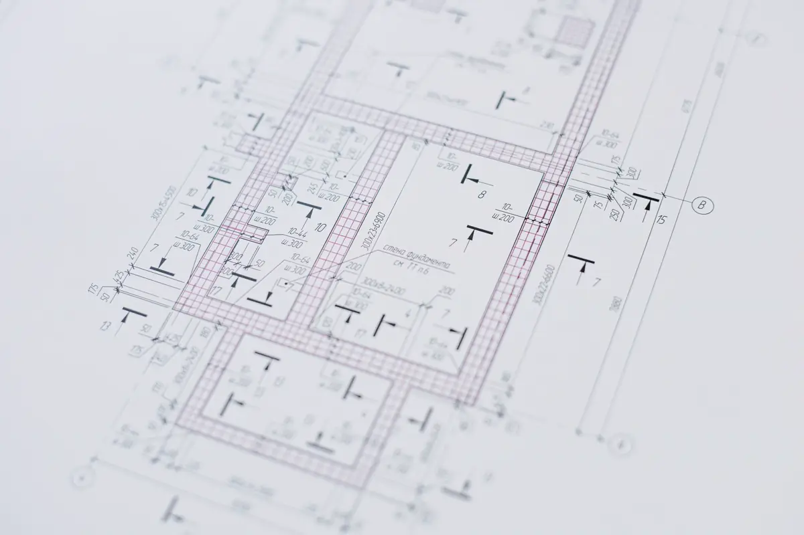

Quando chamar um engenheiro civil
Nem toda obra pede um projeto completo, mas algumas decisões não podem ser tomadas no olho. Vale chamar engenharia antes de mexer em parede, abrir vão, somar peso na laje ou comprar um imóvel com trinca. Depois que o problema aparece, ele custa mais caro.
- Reforma que altera estrutura, instalações ou sistemas do prédio;
- Trinca, infiltração ou desplacamento sem causa conhecida;
- Imóvel sem habite-se ou com área diferente da registrada;
- Obra vizinha que pode afetar o seu imóvel;
- Compra ou recebimento de imóvel novo;
- Exigência de ART por condomínio, prefeitura, banco ou seguradora.
Equipe técnica pronta para atender toda a demanda em Vitória, Vila Velha, Serra, Cariacica e região: o orçamento, o agendamento e o acompanhamento ficam centralizados na Axial Engenharia, do primeiro contato à entrega do serviço.
Serviços de engenharia civil
| Você precisa de | Serviço | Resultado |
|---|---|---|
| Saber se a estrutura está segura | Laudo estrutural | Diagnóstico com ART |
| Reformar apartamento ou loja | Laudo de reforma NBR 16280 | Documento para o síndico |
| Regularizar imóvel | Regularização | Processo na prefeitura |
| Construir ou ampliar | Projeto estrutural | Projeto com ART |
| Controlar uma obra | Acompanhamento de obra | Visitas, relatórios e medição |
| Conhecer o terreno | Sondagem e topografia | Base para projeto |
| Proteger-se de obra vizinha | Vistoria cautelar | Registro do estado do imóvel |
| Receber imóvel novo | Vistoria de entrega | Lista de pendências |
| Cuidar de um prédio | Inspeção predial | Laudo com prioridades |
O que muda com um responsável técnico
A ART, Anotação de Responsabilidade Técnica, registrada no CREA-ES, identifica quem responde tecnicamente pelo serviço. Ela não é um carimbo avulso: precisa corresponder a um trabalho real, feito por profissional habilitado para aquela atividade.
Por isso desconfie de ART oferecida sem visita. O documento deve refletir o que foi visto, calculado ou acompanhado.

Normas que orientam o trabalho
- ABNT NBR 6118: projeto de estruturas de concreto;
- ABNT NBR 6122: projeto e execução de fundações;
- ABNT NBR 15575: desempenho de edificações habitacionais;
- ABNT NBR 16280: gestão de reformas em edificações;
- ABNT NBR 5674: manutenção de edificações;
- ABNT NBR 16747: inspeção predial.
Como funciona o atendimento
Conversa inicial
Você descreve a situação e manda fotos, plantas e documentos.
Definição do serviço
Indicamos o que resolve o seu caso, sem vender mais do que precisa.
Visita e trabalho técnico
Levantamento, cálculo, ensaio ou acompanhamento, conforme o escopo.
Entrega
Documento com ART e explicação em linguagem clara.
Estruturas metálicas e laudos têm páginas próprias: veja montagem de estruturas metálicas e laudos técnicos e ART.
Perguntas frequentes
Preciso de engenheiro para reformar apartamento?
Se a reforma mexe em estrutura, instalações, impermeabilização ou sistemas do prédio, a NBR 16280 pede plano com responsável técnico. Em muitos condomínios, a administração exige esse documento antes de liberar a obra.
Engenheiro civil faz ART de obra pronta?
Em casos de regularização, existe registro de atividade já realizada, com levantamento e verificação do que foi feito. O engenheiro só assume o que conseguiu avaliar.
Quanto custa contratar um engenheiro civil?
Depende do serviço, da área e da complexidade. Com fotos e a descrição do caso, retornamos com o escopo e o valor.
Vocês atendem pessoa física?
Sim. Atendemos moradores, síndicos, comércios e empresas na Grande Vitória.
Vocês constroem a casa inteira?
O foco está nos serviços de engenharia: projetos, laudos, regularização, vistorias e acompanhamento. Para obra completa, conte o seu caso para avaliarmos como podemos ajudar.
Engenharia civil na Grande Vitória
Atendemos imóveis residenciais, comerciais e industriais em toda a região:
Não sabe qual serviço você precisa?
Descreva o problema e mande fotos. Indicamos o caminho.